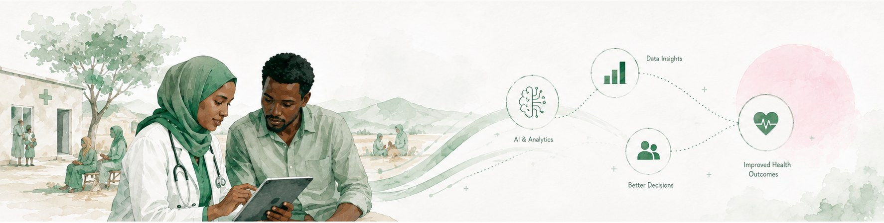

We help turn dataand AI into solutionsthat createmeasurable impact.
Orison Project sits at the intersection of data, AI, research, technology and development — working with the organisations building answers to major social challenges.
We are a small, globally minded team working between technology and impact. Our focus is not simply building technology. We help organisations understand problems through data, build better solutions, evaluate what actually works, and move the ones that do toward the people who need them most.
That means we are as comfortable designing a study as shipping a model, and as interested in whether something should be scaled as whether it can be. The work only counts when it changes a decision on the ground.
Data → AI → Solutions →Evidence → Scale → Impact
Data
See the problem clearly
AI
Build a workable solution
Evidence
Test whether it works
Scale
Reach beyond the pilot
Impact
Change outcomes for people

Organisations buildinganswers to hard problems.
We work with teams addressing poverty, health, agriculture and education — the people closest to the problem, who need research, data and evaluation capacity alongside what they already do well.
Intelligence without arrogance. Technology without hype.
We say what the evidence supports and no more. We publish what we learn, including the parts that didn't work. And we treat local judgment as a source of knowledge, not an obstacle to the model.